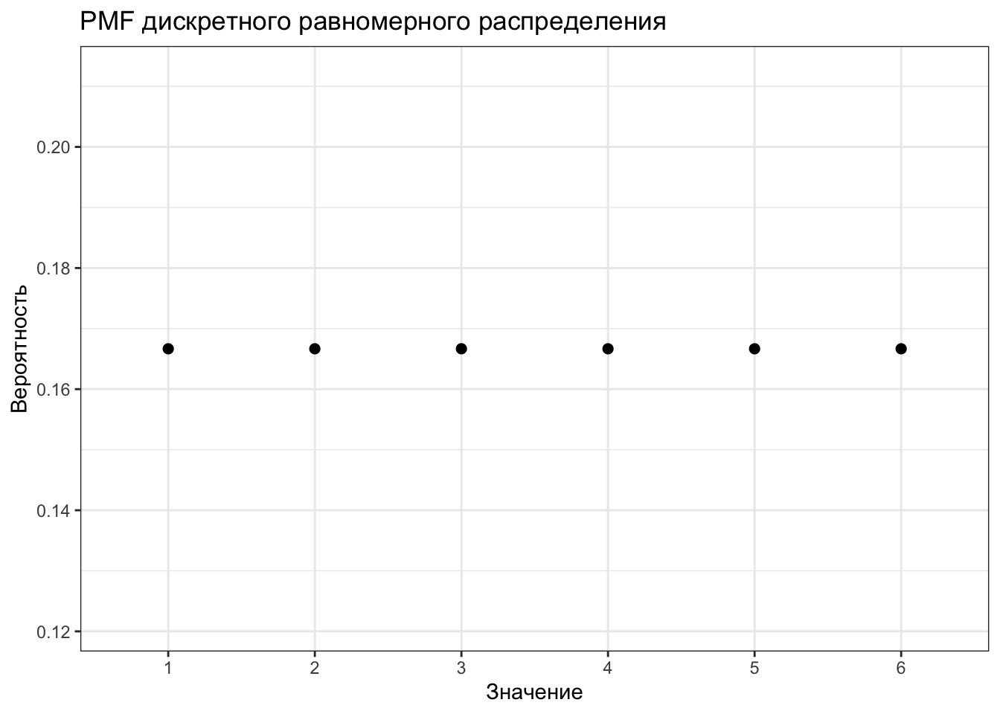

17 Общие линейные модели. Простая линейная регрессия
17.1 Формализация модели
Коррелляция позволяет тестировать гипотезы о связях между переменными. Однако кроме проверки наличия или отсутствия связей между переменными, нас ещё интересует, как бы мы могли управлять одними переменнымис помощью других. Для этого необходимо построение некоторой модели.
Когда мы строили диаграммы рассеяния, мы добавляли на них линию тренда, которая отражала линейную составляющую связи между визуализируемыми переменными. Визуально мы такую переменную проведём очень легко, а вот как мы нам получить её математическое выражение?
Первое, что нужно вспомнить — это общее уравнение прямой. Оно выглядит так:
\[ y = kx + b, \]
где \(k\) — угловой коэффициент (slope), задающий угол наклона прямой к оси \(x\), а \(b\) — свободный член (intercept), который обозначает ординату точки пересечения прямой с осью \(y\).
Итого, чтобы получить уравнение прямой, нам надо знать два этих числа. Мы привыкли к тому, что неизвестными являются \(x\) и \(y\), но теперь, когда мы ищем уравнение прямой на основе имебщихся измерений, ситуация изменяется. Запишем уравнение, используя общепринятие обозначения.
\[ y = b_0 + b_1 x \]
Уравнение отражает зависимость между переменными \(x\) и \(y\), значения которых нам известны, так как у нас есть результаты измерений, а вот неизвестными теперь являются \(b_0\) и \(b_1\). В терминах модели переменная \(y\) называется зависимая, предсказываемая, целевая переменная или регрессант. Переменная \(x\) носит названия независимая переменная, предиктор или регрессор. \(b_0\) и \(b_1\) называются коэффициентами или параметрами модели.
Несмотря на использование терминов зависимая и независимая переменные, необходимо чётко понимать, что сам регрессионный анализ, как и корреляционный, ничего нам не говорит о причинности. Мы выражаем \(y\) через \(x\), но точно так же можем выразить и \(x\) через \(y\) — и модель будет подобрана, так как нет никаких математических ограничений. Поэтому если мы хотим сделать по результатам регрессионного анализа вывод о причинно-следственной связи между явлениями, нам необходимо либо серьёзное теоретическое обоснование нашего вывода — почему мы выбрали в качестве зависимой и независимой переменных именно эти? — либо использование экспериментельного дизайна исследования, где мы обосновываем причинно-следственный характер связи именно через дизайн эксперимента.
17.2 Идентификация модели
Идентификация модели сводится к нахождению коэффициентов \(b_0\) и \(b_1\). Мы хотим провести такую прямую, которая наилучшим образом будет описывать имеющуюся в данных закономерность, поэтому необходимо найти критерий, по которому мы будем определять «хорошесть» нашей прямой.
Графически мы делаем вот что: проводим прямую через облако точек. Очевидно, что красная прямая описывает закономерность совсем плохо, зелёная — чуть получше, а синяя — то, что нам нужно.
КАРТИНКА
Вспомним следующий важный факт: ни одна модель не идеальна, у модели всегда есть ошибка. Таким образом, модель, «хорошесть» которой мы пытаемся определить выглядит так:
\[ y_i = b_0 + b_1 x_i + e_i \]
А графически ошибки будут тут:
КАРТИНКА
Собственно, задача идентификации модели — минимизировать ошибку модели, подбирая её параметры.
\[ Q_{res} = \sum_{i=1}^n e_i^2 = \sum_{i=1}^n \big(y_i - (b_0 + b_1x_i) \big)^2 \rightarrow \underset{b_0, b_1}{\min} \]
Ошибки модели \(e_i\) также называются остатки (residuals), то есть то, что модель не смогла объяснить. Обозначенное выше условие минимизации ошибки лежит в основе метода наименьших квадратов.
17.2.1 Метод наименьших квадратов
Если внимательно посмотреть на условие минимизации ошибки модели, то можно увидеть, что оно представляет собой функцию двух аргументов:
\[ f(b_0, b_1) = \sum_{i=1}^n (y_i - b_0 - b_1 x_i)^2 \]
Это квадратияная функция, и чтобы нам дальше удобнее было с ней работать, раскроем скобки:
\[ f(b_0, b_1) = \sum_{i=1}^n (y_i - b_0 - b_1 x_i)(y_i - b_0 - b_1 x_i) \\ f(b_0, b_1) = \sum_{i=1}^n (y_i^2 - 2 x_i y_i b_1 - 2 y_i b_0 + x_i^2 b_1^2 + b_0^2 + 2 x_i b_1 b_0) \]
Чтобы определить, при каких значения \(b_0\) и \(b_1\) функция будет принимать минимальное значение, нужно взять две частные производные по \(b_0\) и \(b_1\) и приравнять их в нулю.
Берём частные производные:
\[ \frac{f(b_0, b_1)}{\partial b_0} = \sum_{i=1}^n (-2 y_i + 2 b_0 + 2 x_i b_1) = -2 \sum_{i=1}^n \big(y_i - (b_0 + b_1 x_i) \big) \\ \frac{f(b_0, b_1)}{\partial b_1} = \sum_{i=1}^n (-2 x_i y_i + 2 x_i^2 b_1 + 2 x_i b_0) = -2 \sum_{i=1}^n \big(y_i - (b_0+ b_1 x_i) \big) x_i \]
Приравниваем производные к нулю и решаем систему уравнений:
\[ \cases { -2 \sum_{i=1}^n \big(y_i - (b_0 + b_1 x_i) \big) = 0, \\ -2 \sum_{i=1}^n \big(y_i - (b_0+ b_1 x_i) \big) x_i = 0; } \] \[ \cases { b_1 \sum_{i=1}^n x_i + \sum_{i=1}^n b_0 = \sum_{i=1}^n y_i, \\ b_1 \sum_{i=1}^n x_i^2 + b_0 \sum_{i=1}^n x_i = \sum_{i=1}^n x_i y_i; } \] \[ \cases { b_1 \sum_{i=1}^n x_i + n b_0 = \sum_{i=1}^n y_i, \\ b_1 \sum_{i=1}^n x_i^2 + b_0 \sum_{i=1}^n x_i = \sum_{i=1}^n x_i y_i; } \]
\[ \cases { b_0 = \dfrac{\sum_{i=1}^n y_i}{n} - b_1 \dfrac{\sum_{i=1}^n x_i}{n} = \bar y - b_1 \bar x \\ b_1 = \dfrac{n \sum_{i=1}^n x_i y_i - \sum_{i=1}^n x_i \sum_{i=1}^n y_i}{n \sum_{i=1}^n x_i^2 - \big( \sum_{i=1}^n x_i \big)^2} = \dfrac{\overline {xy} - \bar x \cdot \bar y}{S^2_x} } \]
Это всё, конечно, очень хорошо и приятно, но если усваивается trudnovato, то вот основной месседж:
задача индентификации модели линейной регрессии имеет аналитическое решение, то есть мы можем подобрать коэффициенты модели, опираясь только на имеющиеся данные.
Это, безусловно, радостно и приятно.
17.2.2 Матричное вычисление коэффициентов
Аналитическое вычисление коэффициентов выглядит громоздко и трудоёмко — хотелось бы как-то попроще. Нам на помощь приходят матрицы!
Вспомним, что имеющуюся у нас модель мы можем переписать в следующем виде:
\[ \boldsymbol{y}= \boldsymbol{X}\boldsymbol{b}+ \boldsymbol{e}, \] где \(\boldsymbol{y}\) — вектор нашей зависимой переменной, \(\boldsymbol{X}\) — матрица независимых переменных, \(\boldsymbol{b}\) — вектор коэффициентов модели, \(\boldsymbol{e}\) — вектор ошибок (остатков) модели.
Может возникнуть резонный вопрос: «почему \(\boldsymbol{X}\) матрица, ведь у нас только одна независимая переменная?». Так как вектор коэффициентов модели \(\boldsymbol{b}\) содержит два элемента \((b_0, b_1)^\mathrm{T}\), то для удобства вычислений к вектору значений предиктора \(x\) дообавляют вектор, состоящий из единиц, который будет отвечать за интерсепт нашей модел — в результате получается матрица \(\boldsymbol{X}\), которая имеет следующий вид:
\[ \boldsymbol{X}= \begin{pmatrix} 1 & x_{11} \\ 1 & x_{21} \\ 1 & x_{31} \\ \vdots & \vdots \\ 1 & x_{n1} \end{pmatrix} \]
При умножении вектора \(\boldsymbol{b}= (b_0, b_1)^\mathrm{T}\) на матрицу \(\boldsymbol{X}\) как раз будут получатся выражения типа \(b_0 \cdot 1 + b_1 x_{i1}\), а это то, что нам надо.
Опуская детали, сразу укажем матричное решение для коэффициентов модели:
\[ \boldsymbol{b}= (\boldsymbol{X}^\mathrm{T}\boldsymbol{X})^{-1}\boldsymbol{X}^\mathrm{T}\boldsymbol{y} \]
Выглядит проще, не так ли?
Нужно заметить ещё один важный момент: в ходе вычисления коэффициентов мы берём обратную матрицу от матрицы \(X^\mathrm{T}X\). Этот факт нам будет полезен в следующем разделе.
17.3 Тестирование качества модели
Супер! Мы построили модель! Теперь надо понять, насколько она хороша для наших данных. Но перед этим нам надо сделать шаг назад и прояснить ряд моментов, на которые мы имплицитно опираемся, но пока ещё не проговорили.
Мы помним, что работая с выборкой, мы хотим получить информацию о генеральной совокупности. Строя модель, мы предполагаем, что в генеральной совокупности есть связь, которая описывается следующим уравнением:
\[ y_i = \beta_0 + \beta_1 x_i + \varepsilon_i \]
Таким образом, построив модель, мы получили оценки генеральных параметров:
\[ b_0 = \hat \beta_0, \quad b_1 = \hat \beta_1, \quad e_i = \hat \varepsilon_i \]
Кроме того, при построении модели мы также исходили из нескольких предположений.
- Во-первых, мы считали, что связь между предикторами и зависимой переменной линейная1.
- Во-вторых, мы предположили, что наша модель полностью улавливает тренд закономерности, то остатки (ошибоки) модели случайны. Их математическое ожидание равно нулю: \(\mathbb{E} \varepsilon = 0\),
- а также остатки модели не коррелируют между собой2: \(\mathbb{E} (\underset{i \neq j}{\varepsilon_i \varepsilon_j}) = 0\).
- Ну, а раз остатки заключают в себе случайный компонент модели, то они должны быть распределены нормально \(\varepsilon \thicksim \mathrm{N}(0, \sigma^2)\),
- причём их дисперсия должна быть одинакова при любых значениях предиктора \(\sigma_i^2 = \sigma^2 = \mathrm{const}\).
Так-с, ну, теперь можно приступать с анализу модели.
17.3.1 Коэффициент детерминации
Первое, что хочется понять — насколько наша модель информативна. Иначе говоря, сколько дисперсии наших данных она смогла объяснить. На практике работают не с дисперсией, а с суммой квадратов, что почти то же самое.
Вся изменчивость наших данных (total sum of squares, TSS) определяется так:
\[ TSS = \sum_{i=1}^n (\bar y - y_i)^2 \]
На одной из картинок нам уже встречалась «красная модель» — это и было среднее по выборке. То есть графически TSS выглядит так:
КАРТИНКА
Одну часть этой изменчивости объясняет модель (explained sum of squares, ESS):
\[ ESS = \sum_{i=1}^n (\bar y - \hat y_i)^2 \]
КАРТИНКА
Другую часть этой изменчивости модель не улавливает, и она остаётся необъяснённой (остаточной) (residual sum of squares, RSS):
\[ RSS = \sum_{i=1}^n (y_i - \hat y_i)^2 \]
КАРТИНКА
Очевидно (особенно по графику), что
\[ TSS = ESS + RSS \]
КАРТИНКА
В качестве метрики информативности модели используется коэффициент детерминации \(R^2\), который вычисляется по формуле:
\[ R^2 = \frac{ESS}{TSS} = 1 - \frac{RSS}{TSS}, \]
из чего следует, что \(0 \leq R^2 \leq 1\), а значит коэффициент детерминации может быть интерпретирован как доля дисперсии данных, которую смогла объяснить модель.
Считается, что если модель объясняется 0.8 и более дисперсии данных, то она хороша, хотя этот порог о-о-о-о-очень сильно зависит от конкретной задачи и исследовательской области.
Может ли коэффициент детерминации быть отрицательным?
17.3.2 Статистическая значимость модели
На основе всё тех же сумм квадратов мы можем сделать вывод о том, насколько в целом наша модель статистически значима. Для этого нам надо заняться тестированием некоторой статистической гипотезы. Она формулируется так:
\[ H_0: \beta_0 = \beta_1 = 0 \\ H_1: \beta_0 \neq 0 \vee \beta_1 \neq 0 \]
Для тестирования данной гипотезы используется следующая статистика:
\[ F_{\mathrm{df_e, df_r}} = \frac{MS_{exp}}{MS_{res}} = \frac{ESS / \mathrm{df_e}}{RSS / \mathrm{df_r}} \overset{H_0}{\thicksim} F(\mathrm{df_e, df_r}), \]
где \(\mathrm{df_e} = p - 1\), \(\mathrm{df_r} = n-p\), \(p\) — число предикторов в модели, \(n\) — число наблюдений.
Как и всегда, для \(F_{\mathrm{ob}}\) рассчитывается p-value, на основе значения которого мы делаем статистический вывод о статистическом равенствер коэффициента детерминации нулю, а следовательно, о статистической значимости модели в целом.
17.3.3 Статистическая значимость отдельных предикторов
Если модель значима в целом, значит среди её коэффициентов есть те, которые статистически отличны от нуля. Иначе говоря, есть такие предикторы, которые значимо влияют на нашу целевую переменную. В случае простой линейной регрессии предиктора всего два — intercept и slope. Intercept не всегда интерпретабелен, поэтому основное внимание уделают угловому коэффициенту.
Статистическая значимость коэффициента тестируется так:
\[ H_0: \beta_1 = 0 \\ H_1: \beta_1 \neq 0 \\ t = \frac{b_1 - \beta_1}{\mathrm{SE_{b_1}}} = \frac{b_1}{\mathrm{SE_{b_1}}} \overset{H_0}{\thicksim} t(\nu = n-p) \]
17.4 Простая линейная регрессия в R
Хвала небесам, что в R всё то, что написано выше, делается в 1,5 строки кода.
Считаем файл данных:
## ── Attaching packages ─────────────────────────────────────── tidyverse 1.3.0 ──## ✓ ggplot2 3.3.2 ✓ purrr 0.3.4
## ✓ tibble 3.0.4 ✓ dplyr 1.0.2
## ✓ tidyr 1.1.2 ✓ stringr 1.4.0
## ✓ readr 1.4.0 ✓ forcats 0.5.0## ── Conflicts ────────────────────────────────────────── tidyverse_conflicts() ──
## x dplyr::filter() masks stats::filter()
## x dplyr::lag() masks stats::lag()theme_set(theme_bw())
ofv <- read_delim('http://www.statsci.org/data/general/fev.txt', delim = '\t')##
## ── Column specification ────────────────────────────────────────────────────────
## cols(
## ID = col_double(),
## Age = col_double(),
## FEV = col_double(),
## Height = col_double(),
## Sex = col_character(),
## Smoker = col_character()
## )## tibble [654 × 6] (S3: spec_tbl_df/tbl_df/tbl/data.frame)
## $ ID : num [1:654] 301 451 501 642 901 ...
## $ Age : num [1:654] 9 8 7 9 9 8 6 6 8 9 ...
## $ FEV : num [1:654] 1.71 1.72 1.72 1.56 1.9 ...
## $ Height: num [1:654] 57 67.5 54.5 53 57 61 58 56 58.5 60 ...
## $ Sex : chr [1:654] "Female" "Female" "Female" "Male" ...
## $ Smoker: chr [1:654] "Non" "Non" "Non" "Non" ...
## - attr(*, "spec")=
## .. cols(
## .. ID = col_double(),
## .. Age = col_double(),
## .. FEV = col_double(),
## .. Height = col_double(),
## .. Sex = col_character(),
## .. Smoker = col_character()
## .. )Описание данных из источника: «FEV (forced expiratory volume) is an index of pulmonary function that measures the volume of air expelled after one second of constant effort. The data contains determinations of FEV on 654 children ages 6-22 who were seen in the Childhood Respiratory Desease Study in 1980 in East Boston, Massachusetts. The data are part of a larger study to follow the change in pulmonary function over time in children.»
Файл содержит данные об объёме форсированного выдоха (ОФВ) (forced expiratory volume, FEV)3 у курящих и некурящих детей (3–19 лет) и информацию о поле, возрасте, росте и ID пациента.
Попробуем построить модель, которая будет описывать зависимость ОФВ от возраста пациента.
Первоначально посмотрим, есть ли вообще связь между данными переменными:
##
## Pearson's product-moment correlation
##
## data: ofv$FEV and ofv$Age
## t = 29.533, df = 652, p-value < 2.2e-16
## alternative hypothesis: true correlation is not equal to 0
## 95 percent confidence interval:
## 0.7216444 0.7874568
## sample estimates:
## cor
## 0.756459## `geom_smooth()` using formula 'y ~ x'
Связь есть и довольно приличная, что весьма ожидаемо.
Линейная регрессия в R строить с помощью функции lm(), которой необходимо в формульном виде указать модель, а также данные, на основе которых модель должна быть построена.
Формульная запись в общем виде выглядит так: y ~ x, где y — интересующая нас целевая переменная, а x — предиктор нашей модели.
Записываем нашу модель в объект, а затем передаём этот объект в функцию summary(), которая выведет нам всю необхожимую информацию:
##
## Call:
## lm(formula = FEV ~ Age, data = ofv)
##
## Residuals:
## Min 1Q Median 3Q Max
## -1.57539 -0.34567 -0.04989 0.32124 2.12786
##
## Coefficients:
## Estimate Std. Error t value Pr(>|t|)
## (Intercept) 0.431648 0.077895 5.541 4.36e-08 ***
## Age 0.222041 0.007518 29.533 < 2e-16 ***
## ---
## Signif. codes: 0 '***' 0.001 '**' 0.01 '*' 0.05 '.' 0.1 ' ' 1
##
## Residual standard error: 0.5675 on 652 degrees of freedom
## Multiple R-squared: 0.5722, Adjusted R-squared: 0.5716
## F-statistic: 872.2 on 1 and 652 DF, p-value: < 2.2e-16Аутпут этой функции надо читать снизу вверх. Прежде всего, нас интересует статистическая значимость модели в целом, поэтому мы смотрим на значение F-статистики и p-value для неё. Здесь p-value много меньше конвенционального .05, поэтому мы делаем вывод о том, что модель статистически значима.
Далее мы смотрим на коэффициент детерминации. В данном случае он равен примерно 0.6, что неплохо.
И затем мы смотрим на результаты тестирования значимости отдельных предикторов. Мы видим, что предиктор «возраст» оказался статистически значимым, так как p-значение, рассчитанное для t-статистикии, значительно меньше конценциональнгого .05. Следовательно, мы делаем вывод о том, что возраст связан в ОФВ. Более того, так как у нас оценка коэффициента при предикторе, мы можем сказать, что с увеличением возраста на единицу ОФВ в среднем возрастрает на 0.22 л.
Строго говоря, регрессия как и корреляция не показывает причинно-следственной связи, но в данном случае, опираясь на здравый смысл, мы эту причинно-следственную связь имеем. В общем случае, как уже говорилось выше, когда мы хотим делать вывод о причинно-следственной связи, проводя регрессионный анализ, нам необходимо либо концептуально обосновывать нашу модель и теоретически доказывать причинно-следственный характер изучаемой связи, либо использовать экспериментальный дизайн исследования.
17.5 Диагностика модели
Окей, наша модель значима в целом, а значит значимы и её предикторы, она объясняет приемлемую долю дисперсии данных. Неужели этого недостаточно?
Недостаточно. При построении модели мы исходили из ряда предпосылок. Напомним их:
- линейность связи
- нормальность распределения остатков и нулевое математическое ожидание
- равенствво дисперсии остатков при различных значениях предикторов (гомоскедастичность)
- независимость остатков от предикторов модели
Линейность связи мы проверили, когда визуализировали корреляцию между переменными.
Другие предпосылки мы можем проверить следующим образом:

Данные графики позволяют провести диагностику модели.
Нормальность распределения остатков отображена на правом верхнем графике. Если все наблюдения находятся на или близко к пунктирной линии, то распределение остатков не отличается от нормального.
Два левых графика позволяют проверить независимость остатков от предикторов модели и требование гомоскедастичности. На графике не должно определяться никаких явных паттернов. В данном случае мы видим, что красная линия тренда демонстрирует нам явный паттерн стремления вниз (верхний график) и явный паттерн линейной связи (нижний график), что говорит о том, что требование независимости остатков модели от предикторов не выполнено, и модель не до конца ухватывает имеющиеся закономерности.
Кроме того, мы видим разный разброс остатков, что говорит о невыполнении требования гомоскедастичности — остатки гетероскедастичны.
Последний график позволяет определить влиятельные наблюдения. Это такие наблюдения, удаление/добавление которых сильно повлияет на положение регрессионной прямой. В данном случае все наблюдения располагаются в пределах критических значений расстояния Кука (метрика влиятельности наблюдений), так как на график даже не попала красная пунктирная линия.
Что можно заключить по результатам диагностики модели? Модель необходимо дорабатывать. Она ловит часть закономерности, присутствующей в данных, но необходимо вводить дополнительные предикторы, чтобы регрессия ухватывала имеющуюся закономерность более полно.